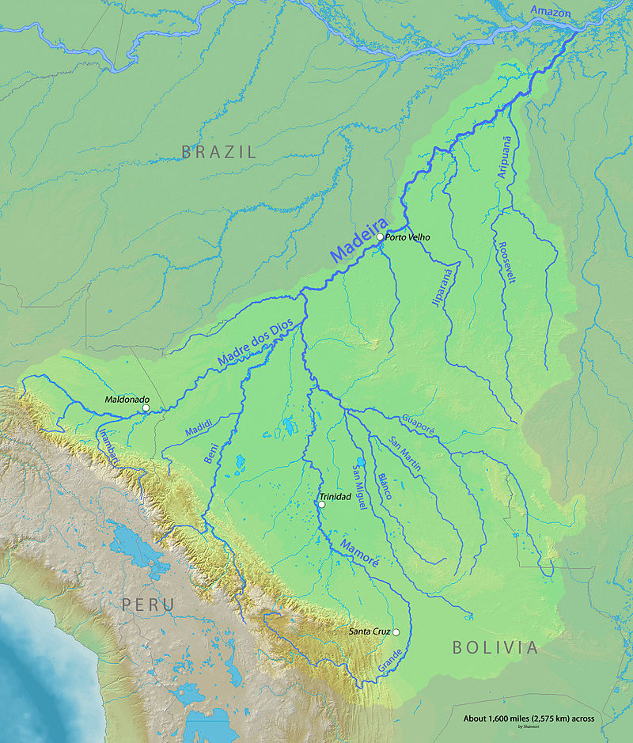

Quintus can be found at qcurtius.com. He is the author of the books On Duties, Thirty Seven, Sallust: The Conspiracy Of Catiline And The War Of Jugurtha, and other books. His work has been reviewed at Taki's Magazine. He can be followed on Twitter


Theodore Roosevelt was unique among the occupants of the presidential office. Besides all of his achievements during his tenure as chief executive, he led a remarkable private life as well. He had worked as a rancher, a big game hunter, a combat commander, and, in the last great escapade of his life, he transformed himself into the role of explorer.
As the co-leader of the Roosevelt-Rondon Expedition of 1913-1914, he added his name to the list of Amazonian explorers who risked their lives to penetrate the secrets of that lush and intimidating canopy. How this came about, we will now relate.
Roosevelt was the type of man who was never happy when idle. He always had to be involved in some great enterprise. He had an irrepressible spirt and dominating will that burst beyond the acceptable boundaries of the “proper” society of the era. When his doomed 1912 presidential election “Bull Moose” campaign ended, he was left with nothing to do.
But Roosevelt could not be happy for long with nothing to do. He had planned on taking a speaking tour of South America, and a leisurely ride along the Amazon River. But for some reason the Brazilian government asked Roosevelt if he would like to accompany one of their explorers (Candido Rondon) on a planned expedition along the so-called “River of Doubt” (Rio da Duvida).

With no qualifications or experience for such an arduous project, Roosevelt accepted. That a fifty-five year old ex-president would agree to such an offer is nothing less than incredible, but nevertheless comports with the Rooseveltian personality profile. He was a man who could not refuse a dangerous challenge.
The Amazonian basin one hundred years ago still contained vast tracts of unknown geography. Even the Brazilian government had only the vaguest idea of what lay inside the largest region within its borders. Rondon’s plan was to trace the course of the Rio da Duvida, and find out exactly how it joins the Aripuana and Madeira Rivers (see map).
Roosevelt’s wife was terrified, but managed to convince her son Kermit (who had just become engaged to be married) to accompany his father for the purpose of “watching out” for him. Thus the stage was set for one of the more surreal episodes in the annals of American presidential history.
The Amazon basin is nothing to be trifled with. It permits all who enter the opportunity to taste its power. Roosevelt and his son would both lose their health; but they came very close to losing their lives.
The expedition began at the town of Tapirapua and traveled northwest, reaching the River of Doubt in February 1914. The plan was to travel along the river, collect insect and wildlife specimens, and document the geography of the area. But in the Amazon, nothing related to travel is ever simple.
Kermit Roosevelt
Problems began immediately. Roosevelt had put his trust in Rondon’s proven organizational ability; but unfortunately for both men, lesser figures had botched the logistical details. Food ran short, medical supplies were scare, and the Brazilian porters (called cameradas) did not work well with each other.
As a result, by the time the expedition began down the Rio da Duvida, everyone was already weakened and sick. This region of the Amazon is one of the most malarial in Brazil, and in 1914 knowledge of the disease was still in its infancy. No one in the party was spared its ravages (although Rondon himself did live to the age of 92, dying in Rio de Janeiro in 1958).
There were other problems. The types of canoes chosen for the river turned out to be too heavy; these sunk often, with the inevitable loss of precious provisions. Almost nothing was known of the Indian tribes in the area, and these turned out to be either hostile or apathetic. As the journey became more and more arduous, discipline and morale broke down.
One man drowned in the rapids early in the trip. One porter was murdered by another. The survivor was abandoned in the jungle to his fate (a swift death).
Roosevelt himself suffered grievously. A minor leg wound, caused by a scrape against a sharp river rock, became infected. In his starved and diseased state, the wound would not heal. Delirium and fever followed; he became so bad that he actually begged his son and the party to leave him in the jungle. Roosevelt’s incredible willpower, with Kermit’s encouragement, somehow managed to keep him alive.
The expedition was almost certainly saved from ruin by small parties of rubber-harvesters encountered along the way. These laborers (called seringueiros) helped the party haul its canoes, and gave them additional food and provisions. Finally, in April 1914, the group reached the junction where the River of Doubt connects with the Aripuana River.
Rondon had arranged for a relief party to meet them at this river junction. Roosevelt himself was given medical attention and began a slow recovery. But his jaundiced frame would never quite be the same. He would die five years later, his life almost certainly cut short by the ravages he had undergone in the Amazon.
The River of Doubt was renamed “Rio Roosevelt” by the Brazilian government. The expedition actually had been successful in what it set out to do: it brought back numerous botanical, insect, and animal specimens, and charted the course of the river for the first time. Roosevelt returned in triumph to New York and defended his expedition’s accomplishments in a presentation given to the National Geographic Society.
It had been an incredible accomplishment for an amateur adventurer of fifty-five years who had never been in the rain forest before. But perhaps that is an inaccurate assessment.
For he was still, after all, Theodore Roosevelt.
Read More: 4 Things I Observed From My Trip To New York City